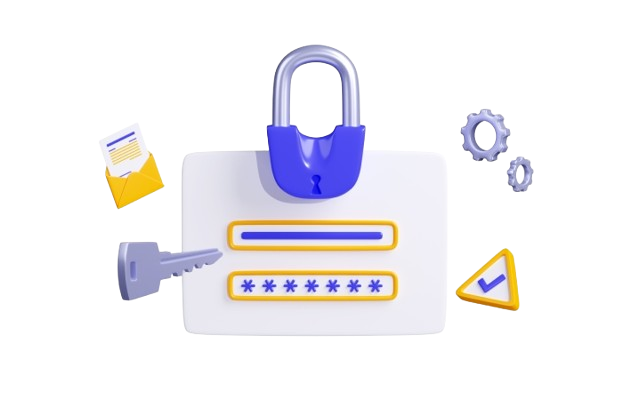

Office 365 and Microsoft 365 environments are frequent targets for phishing attacks, spear phishing, whaling, ransomware delivery, and business email compromise because attackers know that cloud mailboxes contain sensitive conversations, invoices, credentials, and files. Protecting Exchange Online requires more than one control; organizations need layered anti-phishing protection, identity security, email authentication, user training, and continuous monitoring.
Start with privileged accounts such as Global Administrator, Security Administrator, Organization Management, and other role-based access control (RBAC) roles, but do not stop there. Attackers often target regular users first, then use compromised cloud mailboxes to launch spear phishing, internal phishing attacks, or business email compromise campaigns.

Use Microsoft Entra Conditional Access to enforce MFA for:
Accounts with permissions such as Global Administrator, Security Administrator, Security Reader, Global Reader, View-Only Organization Management, and Organization Management should have stronger security settings. These roles can access sensitive email & collaboration data, adjust policy settings, and change core security settings across the tenant.
Microsoft Defender for Office 365 provides advanced anti-phishing protection for Exchange Online. Its anti-phishing policies use machine learning, behavioral analysis, mailbox intelligence, recipient history, sender history, and impersonation signals to detect phishing attacks before they reach users.
In the Microsoft Defender portal, go to Email & collaboration > Policies & rules > Threat policies to configure anti-phishing policies. Review the default policy first, then create custom anti-phishing policies for high-risk users, departments, domains, Microsoft 365 Groups, Distribution Groups, and Mail-enabled security groups.
When you configure anti-phishing policies, pay close attention to:
Email authentication is essential for stopping domain spoofing and reducing phishing attacks. SPF, DKIM, and DMARC help receiving mail systems verify whether a message claiming to come from your domain is legitimate.
Configure:
Exchange Online Protection and Microsoft Defender for Office 365 use these signals as part of sender reputation analysis. Proper email authentication also improves anti-phishing protection and helps identify spoofed senders.
Begin with p=none to monitor legitimate senders, then move to p=quarantine and eventually p=reject. This limits spoofing, helps stop business email compromise, and reduces the success of spear phishing campaigns that abuse your brand.
Many phishing attacks deliver ransomware through malicious links or infected attachments. Microsoft Defender for Office 365 includes security features such as Safe Links and Safe Attachments to inspect URLs and files before users interact with them.
Safe Links rewrites and checks links when users click them, not only when the email is delivered. This matters because attackers often send clean links first, then weaponize them later. Safe Links helps protect cloud mailboxes from credential theft, ransomware, and phishing attacks.
Safe Attachments opens files in a secure detonation environment before delivery. This reduces the risk of ransomware, malware, and weaponized documents reaching users. Apply these security features broadly, then create stricter custom policies for executives, finance, legal, and HR.
Executives and finance users face elevated risk from whaling, spear phishing, and business email compromise. Attackers often impersonate CEOs, CFOs, vendors, legal counsel, or payroll providers to request wire transfers, invoice changes, or sensitive data.
Use Microsoft Defender for Office 365 to define protected users and domains. Add executive names, common display-name variations, and critical external partners to impersonation protection. Enable mailbox intelligence so Microsoft Defender can compare normal communication patterns against suspicious sender behavior. Discover more by clicking here.